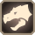

Black Bau
Open in the wiki →Bau. Inspiring fear across the battlefield, this creature blends into the darkness of night to strike its foes
- Type
- Bau
- Classes that ride it
- Dragoon, Bau Lord

Bau. Inspiring fear across the battlefield, this creature blends into the darkness of night to strike its foes